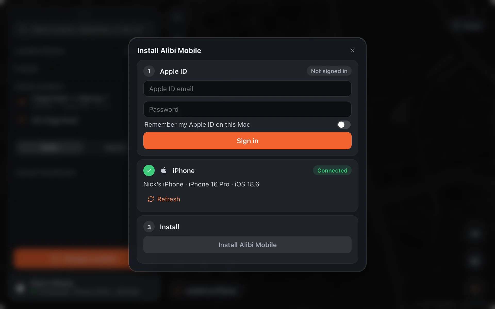

Alibi Mobile
Install Alibi Mobile
Alibi Mobile is the companion app that runs on the iPhone itself. Install it once from the Mac; after that the phone changes its own location, no cable and no Mac, until the weekly re-sign.

How the standalone works
After the install, the phone changes its own location with no Mac attached. Open Alibi Mobile, pick a place, tap Change Location, and put the phone in your pocket. Three things make that possible:
- A loopback VPN. iOS will not let an app talk to the phone’s own developer services directly, so a free App Store VPN app (StosVPN or LocalDevVPN) maps a private address back to the phone. It routes nothing anywhere else. Turn it on once; it stays on.
- The pairing the Mac pushed. The install step leaves a pairing file inside the app. With it, the app opens the same developer connection the Mac uses, but to itself.
- A keep-alive. iOS closes idle developer channels, so the app re-sends the location every few seconds and holds a background location session so it is not put to sleep. iOS can still end it after a long time in the background; reopen the app and it carries on.
The one thing that expires is the signature. An app signed with a free Apple ID stops launching after 7 days, so plug the phone in once a week and Alibi re-signs it in a few seconds. Your places, routes and pairing survive the re-sign. A paid Apple developer account signs for a year.
Set up the iPhone as in Setup iPhone and wait for Connected.
Click Install on iPhone at the bottom of the map.
Sign in with an Apple ID. Apple requires apps on an iPhone to be signed by an Apple ID; any account works, including a spare one. The sign-in goes straight to Apple, and Alibi keeps only the email if you tick Remember my Apple ID. When Apple asks for a two-factor code, type it in the box that appears.
Click Install Alibi Mobile. Alibi signs the app, installs it over the cable and hands it the pairing it needs. It takes about a minute; keep the phone unlocked.
Trust the developer. An app signed with a free Apple ID will not open until the phone has checked the signature with Apple: on the iPhone go to Settings › General › VPN & Device Management, tap your Apple ID under Developer App, and tap Trust. Then tap Verify App. If the phone says an internet connection is required even though it is online, a VPN is in the way: turn off every VPN on the phone, including the loopback VPN Alibi Mobile uses, try cellular instead of Wi‑Fi, and tap Verify App again. Some home networks and ISPs block Apple’s check outright, and Verify App then fails without a message; an ordinary VPN (any commercial one) for that one tap gets past it. If Alibi Mobile says it cannot verify its integrity, this is the step that was missed.
On the iPhone, open Alibi Mobile and allow the VPN profile it asks for. That profile is how the app reaches the location service on the phone; it carries no traffic anywhere else.
Enter your access code under Setup on the phone. The same code covers one Mac and one iPhone; everything shows without it, only changing the location needs it.
Alibi Mobile then checks itself: the pairing file the Mac wrote, the VPN, and the developer image, which it downloads (about 20 MB) and mounts on its own with a progress pill. If the pairing step failed on the Mac, use Install on iPhone › Save pairing files, AirDrop
pairingFile.plistanddevice.jsonto the phone, and pick both under Setup › Import.